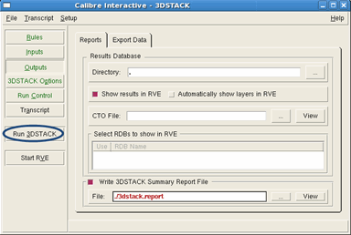

You can set up
and run a Calibre 3DSTACK verification from Calibre Interactive.
Detailed procedures for Calibre Interactive
3DSTACK are found under the section “Calibre Interactive for Calibre 3DSTACK”. Additional
information about Calibre Interactive can be found in the Calibre Interactive User’s Manual.
Note: In the case of
a conflict between commands in the rule file and Calibre Interactive,
the settings in Calibre Interactive take precedence.
Procedure
- Enter the following command
to invoke Calibre Interactive for Calibre 3DSTACK:
- After you invoke Calibre Interactive,
you are prompted to specify a runset file.
A runset sets GUI options and can be useful for managing
different types of verification operations. You can continue without
a runset by clicking Cancel, or load an existing runset
with the Browse (…) button.
- Click on the Rules button
in the upper-left pane of the CI window and specify the path to
your Calibre 3DSTACK rule file and run directory.
Figure 1. Specify Rule File
- (Optional) Click the Load button
to load instructions from the rule file and apply them to the current
Calibre Interactive session. Any syntax errors are reported.
- Click on the Outputs button
and enable the “Show results in RVE” checkbox under the Reports tab
to display results in Calibre RVE following a Calibre 3DSTACK run.
- Enable the “Write 3DSTACK
Summary Report File” checkbox and specify a path to a file. The
report file contains important information about the design and
verification results. Enabling this option is highly recommended.
- Ensure that the input and
output file options are correct and then click Run 3DSTACK.
Figure 2. Run 3DSTACK 
Results
Your output directory
now contains the assembled 3DSTACK layout view (if specified) and results
databases that can be opened in Calibre RVE. Your run directory
also contains a report file used to debug the verification results.
To understand how to view and analyze
the verification results produced by a Calibre 3DSTACK run, proceed
to “Calibre 3DSTACK Results Analysis Examples”.